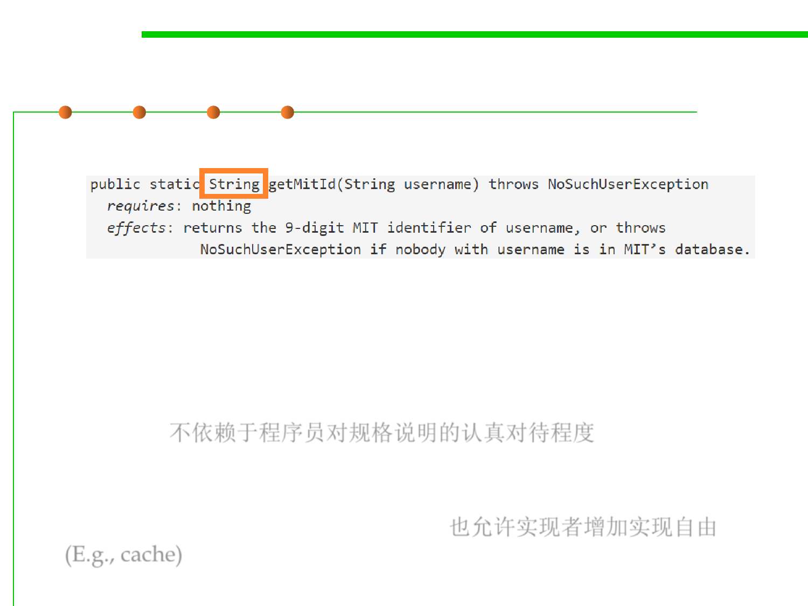

3.2 Designing Specification
Mutable objects reduce changeability
▪ How about this one?
▪ The immutable String return value provides a guarantee that the
client and the implementer will never step on each other the way
they could with char arrays.
▪ It doesn’t depend on a programmer reading the spec comment
carefully. 不依赖于程序员对规格说明的认真对待程度
▪ String is immutable . Not only that, but this approach (unlike the
previous one) gives the implementer the freedom to introduce a
cache — a performance improvement. 也允许实现者增加实现自由
(E.g., cache)